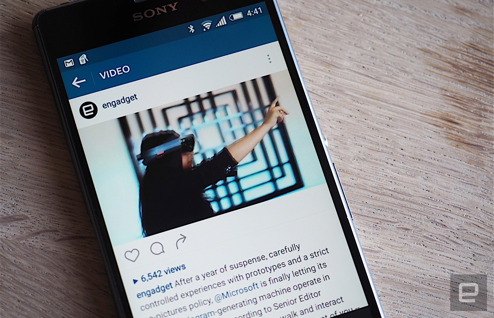
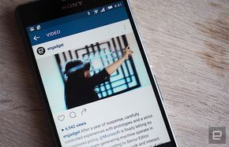

Instagram увеличил продолжительность загружаемых видео
14.03.2016


На прошлой неделе Instagram удивил своих пользователей увеличением лимита продолжительности видео с 15 до 60 секунд – в 4 раза больше, чем было ранее. Видео в более продолжительном формате уже было ранее доступно маркетологам, но несколько дней назад данное изменение было представлено для всех пользователей.
Это большой шаг вперед, и, согласно Instagram, для него есть одна главная причина: люди смотрят все больше и больше видео. По статистике за последние 6 месяцев, время, которое пользователи тратят на просмотр видео в данной социальной сети, увеличилось на 40%.
Но перед тем, как увеличить видео, была проделана большая работа. Для начала, команда разработчиков хотела улучшить качество видео в целом. Но тут они столкнулись с проблемой устройств на Android. Это связано с их особенностью загрузки контента из интернета. Тут пришла на помощь Instagram материнская компания Facebook, разработавшая новую платформу декодирования. Благодаря ей, все видео больше 15 секунд теперь будут обрабатываться на новом движке, что сделает их загрузку быстрее в разы.
Результатом данных изменений является появление более современного дизайна, но менее отличительного, чем нынешний. Пока не ясно, будет ли он дорабатываться. "Мы часто тестируем нововведения лишь на небольшой аудитории," – сказал представитель Instagram. "Это пока лишь тестовая версия."
Назад к новостям